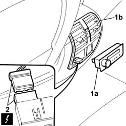

5040D19 CONTROL UNIT with CONTROL PANEL for rear air conditioning - R.R.
- Path
- Procedures > 50 auxiliary units > 5040 AIR CONDITIONING CASING AND COMPONENTS > 5040D air conditioner controls > 5040D19 CONTROL UNIT with CONTROL PANEL for rear air conditioning - R.R.
- Kind
- repair procedure (removal / refitting; the operation number is the code)
- Applies to
- all engines; all production periods
- Interactive page
- https://sloeber94.github.io/elrnDB-lThss/en/#/157290
Applies to: all engines; all production periods
 Removing
Removing
 Refitting
Refitting- Open the boot and disconnect the negative battery terminal.
1. Release the rear climate control unit panel (1a) from the housing in the rear passenger air vent (1b) in the tunnel cover.
2. Disconnect the electrical connector.

Applies to: all engines; all production periods
- Remove the control unit and control panel.
Applies to: all engines; all production periods
Refitting
Removing- Connect the electrical connector for the climate control rear panel.
- Position the climate control rear panel in the housing in the air vent.
- Connect the negative battery terminal.
Topics that link to this page (15)
- 3350E30 General acceleration and slewing SENSOR
- 5010B56 Duct between climate control casing and air duct to rear seats - R.R.
- 5010C32 Air VENT in tunnel cover for rear seats
- 5010D27 UPPER MIXED AIR TEMPERATURE SENSOR (one) left or right - R.R. following electrical circuit check
- 5010D28 LOWER MIXED AIR TEMPERATURE SENSOR (one) left or right - R.R. following electrical circuit check
- 5040C10 Air conditioning CASING - R.R.
- 5040D86 air conditioner right air mixture flap control motor - r r
- 5040D94 Air conditioning upper left air distribution flap control motor (DEFROST) - R.R.
- 5040D96 Air conditioning upper right air distribution flap control motor (DEFROST) - R.R.
- 5505C26 ENGINE COMPARTMENT built in wiring - R.R.
- 5505C31 Under-FACIA WIRING - R.R.
- 5505C41 PASSENGER COMPARTMENT built in WIRING - R.R.
- 7040A10 Instrument facia TRIM - R.R.
- 7040A95 Left or right reinforcement crossmember (one), dashboard and bodyshell supporting crossmember - R.R.
- 7040L17 Passenger compartment front floor carpet - R.R.